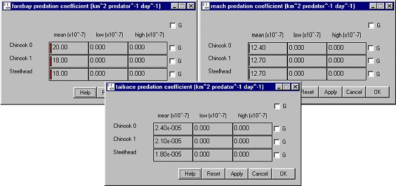

Predation Coef: Reach Activity, Forebay, and Tailrace
Predation coefficients effect the rate of predation activity by northern pikeminnows on smolt for a given predator density. The coefficients are species specific and are defined separately for reaches, dam forebays and dam tailraces. Predation mortality in COMPASS is related to predator abundance, predator temperature response, and a predator activity coefficient. These factors combine to determine a predation rate which is applied to the smolt population on a time-step basis.
Behavior Predation CoefReach Activity opens a window for setting the predator activity coefficient which scales the maximal consumption rate to represent in situ conditions where predator-prey encounters may be less frequent, alternative prey may exist, and predators may not be feeding to satiation. Functions with settings in Reach Predator Density and Predation Temperature Response Equation to set a rate of predation mortality. To use these parameter values during a run, select Gas and Pred Mortality for the Mortality Model in RunRuntime Settings. This is a Slider Input window.
Predation CoefReach Activity opens a window for setting the predator activity coefficient which scales the maximal consumption rate to represent in situ conditions where predator-prey encounters may be less frequent, alternative prey may exist, and predators may not be feeding to satiation. Functions with settings in Reach Predator Density and Predation Temperature Response Equation to set a rate of predation mortality. To use these parameter values during a run, select Gas and Pred Mortality for the Mortality Model in RunRuntime Settings. This is a Slider Input window.
Selecting BehaviorPredation CoefForebay or BehaviorPredation CoefTailrace opens a Slider Input window for setting the predation coefficients in dam forebays or tailraces, respectively, which effect the rate of predation activity on a species as they travel through that segment.
Each Slider Input window contains three sliders for setting mean, low, and high values by species. When the low and high values are set to zero, or when the low and high are set to the mean value, COMPASS uses the mean value at all times (the term becomes deterministic). When the low and high values are not equal, COMPASS uses the mean, low and high values to randomly generate a value when executed with variance suppression turned off in the Runtime Settings window under the Run Menu. With variance suppression turned on, COMPASS uses the mean value and ignores the high and low values. In either case, the mean value must lie within the central two quartiles of the distribution (i.e., the middle 50%). For example, if the low value is set to 0 and the high value is set to 100 then the mean value must be set between 25 and 75. If values are set that do not conform to this restriction, COMPASS will abort the run and generate an error message in the Message Log (if open) specifying which species have bad parameters.
ERROR: bad stochastic param reach pred coeff for Chinook 0.
-->mean not in range 12.386550 <= mean <= 17.341249
ERROR: aborting run due to bad parameter values.
Slider Input window features.

Predation Coefficient Reach, Forebay and Tailrace windows